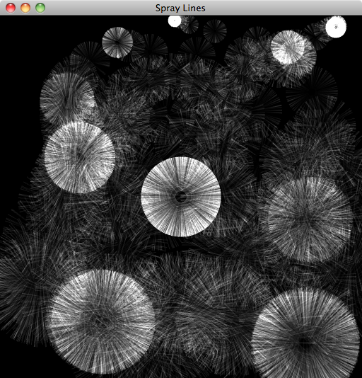

Drawing Shapes |
Real-time drawing in LuaAV uses OpenGL for hard-ware accelerated 3D graphics. The Window class in LuaAV automatically creates and enables an OpenGL context when it is created, so setting up drawing requires only a few lines of code. Windows are created by using the global Window function:
win = Window("Title")
Windows should be set to global variables like in the above code so that they won't be garbage collected. Position and size arguments can be set after the Window title:
-- title, position, size win = Window("Title", 0, 0, 512, 512)
Once a Window is created, we need to create callback functions for it in order to receive mouse, keyboard, and most importantly drawing events. The full list of Window events is listed in the app.Window documentation. All of the Window callbacks are instance methods, meaning the first parameter is the Window object itself followed by any other arguments.
win = Window("Title") -- key callback, ':' indicates instance function with an implicit 'self' argument function win:key(event, key) if(event == "down") then if(key == 27) then -- toggle fullscreen when the 'esc' key is pressed self.fullscreen = not self.fullscreen end end end -- draw callback, rate is set by win.fps attribute function win:draw() -- draw graphics here end
When a Window is first created and has an empty draw function, the Window will simply show its default clearcolor, which is black by default. Inside the draw function, the Window's OpenGL context is active and can be used to display graphics. An OpenGL context represents all of the operating system and hardware resources required to use OpenGL. It must be active in order for drawing to work properly. The only callbacks where drawing can be done are in the draw, key, and mouse functions.
All of the OpenGL drawing functionality is contained in the opengl module. It contains both low-level OpenGL functions such as glBegin, glVertex, glEnd, etc. as well as higher-level objects for managing more complex operations involving textures, shaders, image processing, and so on. The OpenGL module is not automatically loaded into LuaAV scripts, so it must be required in order to use it. The following code draws a white square:
local gl = require("opengl") local GL = gl -- alias the opengl module to mimic C-style OpenGL code win = Window("Square") function win:draw() -- set the current color to white gl.Color(1, 1, 1, 1) -- draw a square gl.Begin(GL.QUADS) gl.Vertex(-1, 1) gl.Vertex(1, 1) gl.Vertex(-1, -1 gl.Vertex(1, -1) gl.End() end
As another example, we can draw bunches of lines spraying out from where the mouse cursor was pressed. To do this, we use the mouse callback along with some math functions and the opengl.sketch.
local gl = require("opengl") local GL = gl local sketch = require("opengl.sketch") win = Window("Spray Lines") -- turn of the clearing of frames between each draw win.autoclear = false lastpos = {256, 256} function win:mouse(event, btn, x, y) if(event == "down" or event == "drag") then lastpos = {x, y} end end function win:draw() -- Turn of depth testing, turn on blending (additive) gl.Disable(GL.DEPTH_TEST) gl.Enable(GL.BLEND) gl.BlendFunc(GL.SRC_ALPHA, GL.ONE) -- enter orthographic (2D) drawing mode and -- scale the coordinates to match the pixel dimensions of the window sketch.enter_ortho(self.dim) gl.Begin(GL.LINES) -- scale the radius by the y-coordinate local radius = (lastpos[2]/self.dim[2])^0.5*80 for i=1, 100 do gl.Color(0, 0, 0, 0) gl.Vertex(lastpos) gl.Color(1, 1, 1, 0.1) -- make a random point on a circle 'radius' pixels from the mouse position local theta = math.random()*math.pi*2 gl.Vertex( radius*math.cos(theta)+lastpos[1], radius*math.sin(theta)+lastpos[2] ) end gl.End() -- end orthographic drawing mode sketch.leave_ortho() end